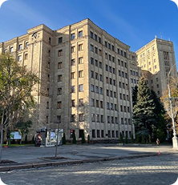

On the previous pages, you saw what Kharkiv looks like today. But why does a city that is more than 370 years old have so many huge Soviet buildings and wide streets? One of the main reasons is that Kharkiv was the capital of Soviet Ukraine for fourteen years, and during this period the city was developed on a much larger scale.

Karazin University
A new capital
When Kharkiv became the capital, the city needed new government buildings, institutes and large public spaces. Freedom Square was developed as a new centre of the city, and Derzhprom became its main symbol.
Completed in 1928, Derzhprom was the first modern skyscraper in the Soviet Union and showed how ambitious the new capital was. Education and science also grew very quickly — 23 new higher education institutions were opened in Kharkiv in 1930–1931. This is why the centre still feels so large and monumental today.
1919
In December 1919, Kharkiv became the capital of Soviet Ukraine. Before that, it had been a large regional and industrial city, but becoming the capital changed its role completely.
For the next fourteen years, the government and many central institutions were based there, and Kharkiv started to develop on a much larger scale.
1934
In January 1934, Stalin moved the capital from Kharkiv to Kyiv. Kharkiv lost its capital status almost immediately, but everything that had been built for the capital stayed in place. The city was no longer the political centre, but it was left with the scale and infrastructure of one.